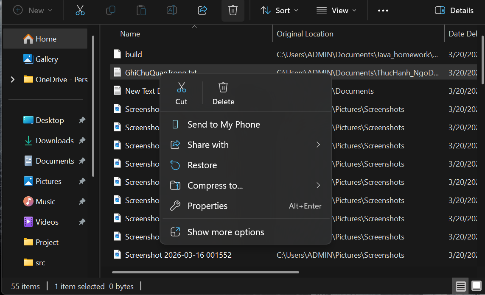
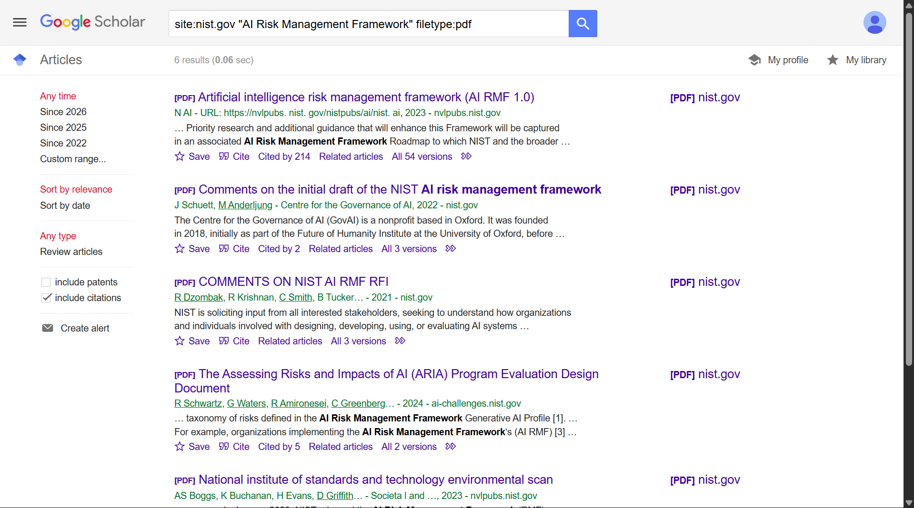
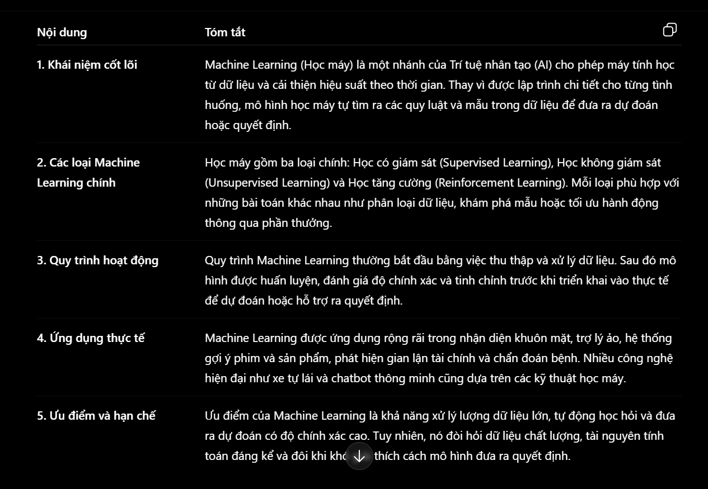
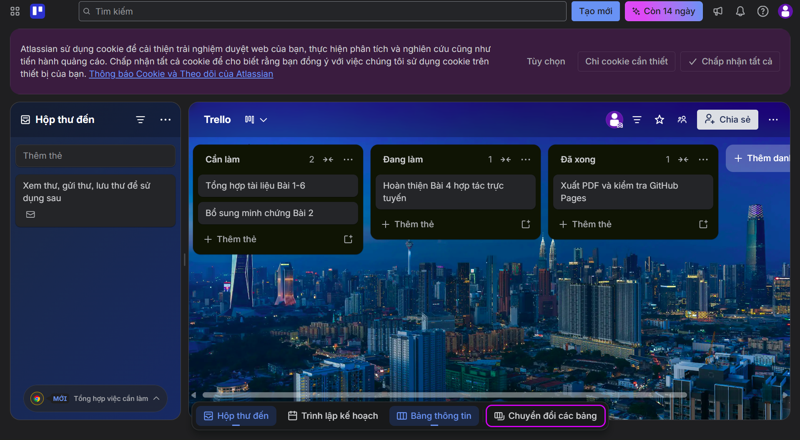
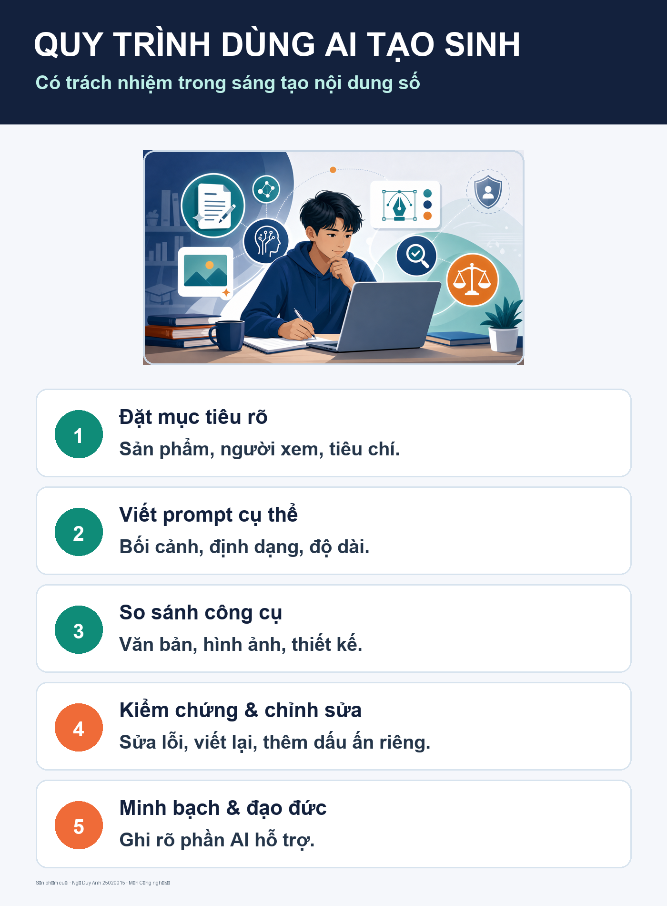
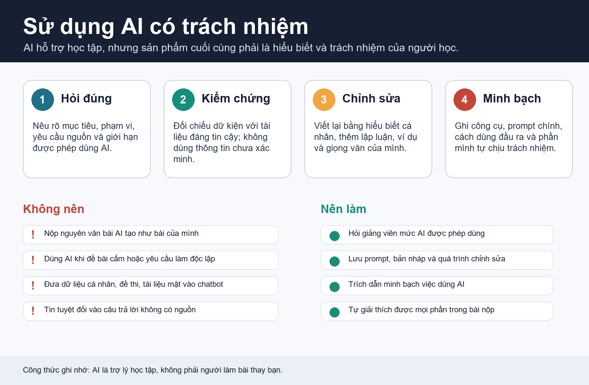

BÀI TẬP 1 · QUẢN LÝ TỆP
Cấu trúc lưu trữ & Quy tắc đặt tên
Thực hành cơ bản trên Windows File Explorer: tổ chức cấu trúc thư mục logic và áp dụng quy tắc đặt tên tệp.

Dự án môn học
Thực hành cơ bản trên Windows File Explorer: tổ chức cấu trúc thư mục logic và áp dụng quy tắc đặt tên tệp.

Khai thác thông tin học thuật trên Google Scholar bằng cú pháp tìm kiếm nâng cao và đánh giá tính tin cậy của nguồn tin.

Thiết lập các cấp độ câu lệnh để định hình phản hồi chất lượng từ AI khi xử lý tóm tắt văn bản và ôn tập lập trình Java.

Tổ chức theo dõi tiến độ công việc và lưu trữ tài nguyên minh chứng học tập bằng sự phối hợp ăn ý giữa các công cụ.

Thiết kế cẩm nang đồ họa tổng kết cách kết hợp AI tạo sinh (Gemini, ChatGPT, DALL-E) cùng tính biên tập của con người.

Báo cáo phân tích rủi ro đạo đức, bản quyền và liêm chính khoa học khi tích hợp các công cụ trí tuệ nhân tạo.
